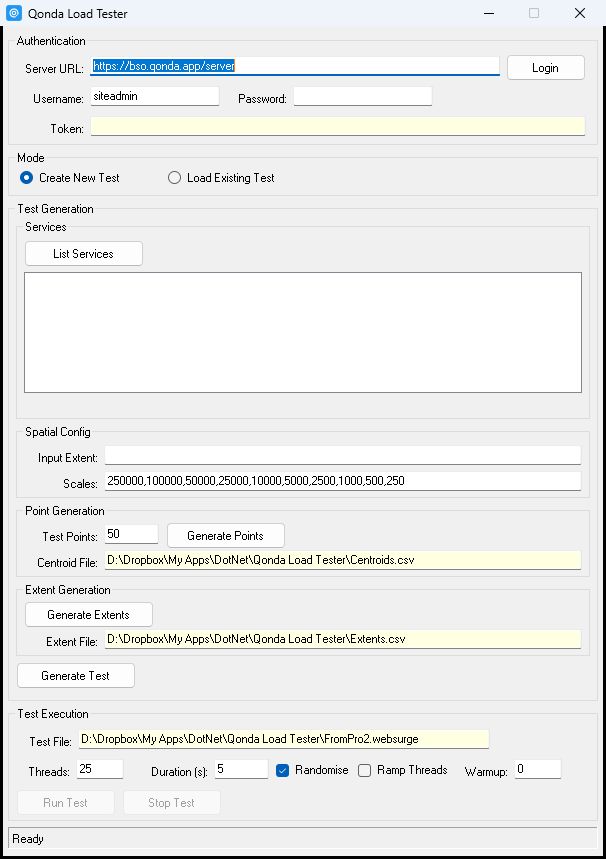
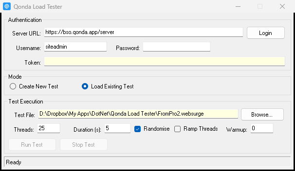
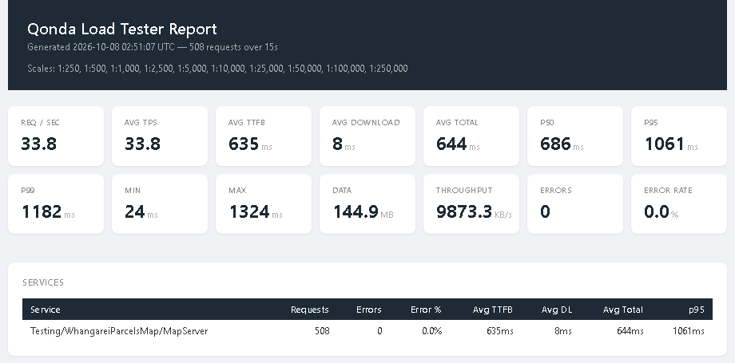
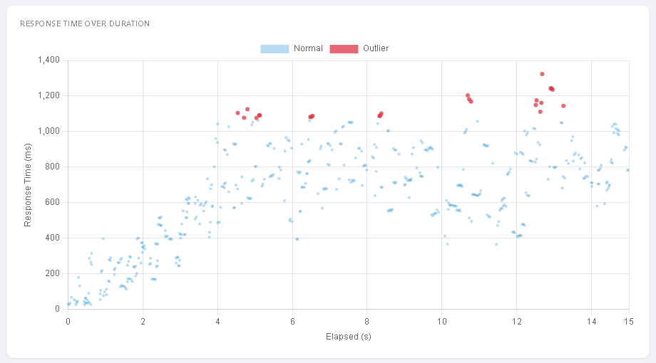
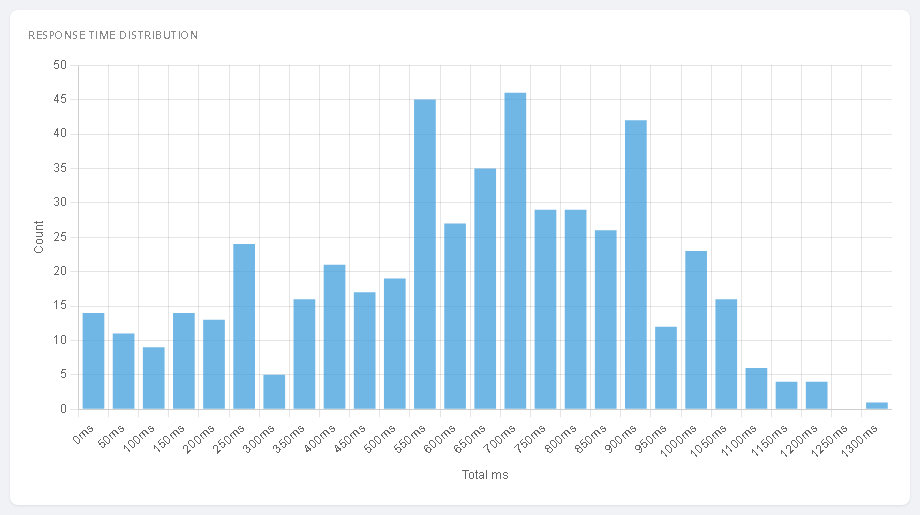
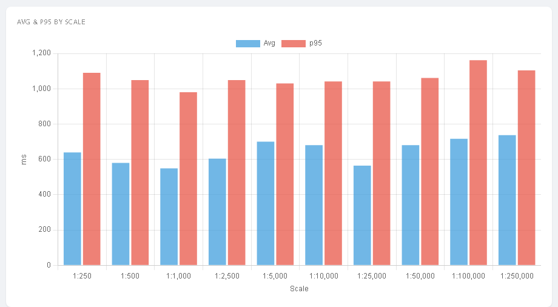
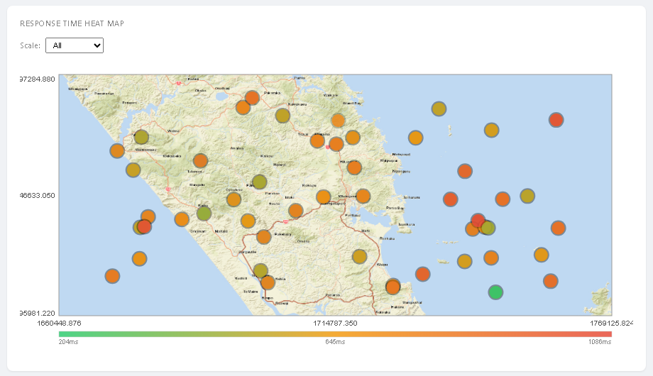

What it does
Qonda Load Tester is a Windows desktop app that load tests ArcGIS Server REST services. It sends realistic map traffic (layer queries and map image exports at many places and scales) with a set number of concurrent requests for a set time, then writes an HTML report of response times, throughput and errors.
There are two parts:
| Part | Use it to |
|---|---|
Qonda Load Tester.exe | Log in, build a test from the server's service list, run tests and produce the report. The main tool. |
QondaLoadTester.pyt | Build a test in ArcGIS Pro from the services in a map and the area on screen, or a polygon layer named extent. Run it in the app. |
How a load test works
1. Build a test file — pick services and an area. Random points are placed in
the area; around each point a screen-sized rectangle is made at every scale; every service gets
requests for every rectangle. The result is a .websurge file of a few hundred to a few
thousand requests. Build it in the app (Create New Test) or in ArcGIS Pro
(the toolbox).
2. Run it — the app sends the file's requests over and over with the chosen
number of threads until the duration is up, logging the timing of every response.
3. Read the report — an HTML page opens in the browser with the
KPIs, charts by time, endpoint and scale, and a
heat map of slow places.
Files in the app folder
Everything the app writes goes into the folder the exe is in.
| File | Written by | Contents |
|---|---|---|
config.json | closing the app | Saved settings. See config.json. |
Centroids.csv | Generate Points | Random test points, x,y per line. |
Extents.csv | Generate Extents | One test area per point per scale. |
GeoJSON.json | Generate Extents | The same test areas as polygons, for checking in a GIS. |
Test.websurge | Generate Test | The test file. Overwritten each time; copy it elsewhere to keep it. |
results-yyyyMMdd-HHmmss.csv | Run Test | One row per request. See Results CSV. |
results-yyyyMMdd-HHmmss.html | Run Test | The report, opened automatically when the run ends. |
LoadTester.log | always | Application log: logins, service calls, test start and end, errors. Grows without limit; delete it now and then. |
Authentication Required
Enter the Server URL of the ArcGIS Server site including its web adaptor, e.g.
https://bso.qonda.app/server (not …/rest/services), a username and
password, and click Login. The token appears in the Token field and the
status bar says Login successful. Run Test stays disabled until the Token field has a value.
The app reads <Server URL>/rest/info. If the server is federated with
a portal, it gets a portal token from the portal's generateToken and exchanges it for a
server token for <Server URL>/rest/services. If the server is standalone,
it calls the server's own tokens/generateToken with the client IP. Either way the token
lasts 60 minutes.
You can also paste a token from elsewhere into the Token field. The token is never saved, but the URL, username and password are saved in plain text in
config.json when the
app closes.
Modes
Create New Test shows the Test Generation panel for building a test from the
server's service list. Load Existing Test hides it and shows a Browse…
button for picking a .websurge file made earlier, by the toolbox or by another tool.
The Test Execution panel is the same in both.

Create New Test 5 steps
1. Services — click List Services (after logging in). Every MapServer
and FeatureServer in the root and in each folder is listed. Select one or more with Ctrl or Shift.
Clicking a service fills the Input Extent with that service's full extent; the last one
clicked wins.
2. Spatial Config — check the Input Extent
(xmin,ymin,xmax,ymax,srid,units, see Input extent) and set the
Scales, comma-separated.
3. Point Generation — set Test Points and click
Generate Points. Points are spread evenly at random over the extent and written to
Centroids.csv; its path appears in Centroid File.
4. Extent Generation — click Generate Extents to make one test area
per point per scale (see Scales and test areas), written to
Extents.csv and GeoJSON.json.
5. Generate Test — click Generate Test. For each selected service the
app reads its layer list and writes the requests (see Requests per service)
to Test.websurge. A message gives the number of requests. If Randomise is
ticked, the file is shuffled.
Load Existing Test
Choose Load Existing Test, click Browse… and pick the file. Log in to the
server the test was built for. Relative request paths are sent to
<Server URL>/rest/services/, so the same file can be run against any server that
publishes the same services.

bboxSR= found in
the file's export requests. A file with only query requests has no bboxSR: type an Input
Extent with the right SRID (only the SRID is used) to get the background right.
Test Execution Run Test Stop Test
- Test File — the
.websurgefile to run. Filled in by Generate Test or Browse…. - Threads — the most requests in flight at once. A new request is sent as soon as one finishes. Default 5.
- Duration (s) — how long new requests keep being sent, not counting warmup. Requests still in flight at the end are allowed to finish.
- Randomise — reshuffle the requests each time the whole file has been sent. The first pass is in file order. (Also used by Generate Test to shuffle the file itself.)
- Ramp Threads — start with 1 thread and add threads evenly until the full number is reached one third of the way through the duration.
- Warmup — seconds of requests sent before the timed test, not logged. Use it to wake up services and fill caches so the start of the test is not skewed.
While a run is going the status bar shows the phase, time, request count, errors and requests per second, once a second:
Running (75s / 305s) | Requests: 1843 | Errors: 0 | Req/s: 26.3
Stop Test stops sending new requests, waits for those in flight (Stopping (waiting for in-flight requests)), then writes the report as usual. When the run ends the report is generated and opened in the default browser.
What happens during a run
Sending — each request is a POST to its path, with the token added as
?token=…, the body from the file, and a 120-second timeout. Paths starting with
http are used as they are; others are added to <Server URL>/rest/services/.
Looping — the file is sent from start to end and then again, as many times as the
duration allows. A short file at high thread counts repeats the same requests often, which mostly
tests the server's cache.
Ramp — with Ramp on, warmup runs on 1 thread, and the timed test starts on 1
thread and rises to the full count. Each change is recorded so the report can draw it.
Timing — for each response the app records the time to first byte (until the
response headers arrive) and the download time (reading the body). Their sum is the total.
Errors — an HTTP 4xx or 5xx status, or a request that fails outright (timeout,
connection refused, DNS), logged as ERROR.
{"error": …} JSON body. The app does not read response bodies, so these count as
successes. If response sizes in the report look suspiciously small and even, check one request by
hand.
Input extent
1683000.0,6020000.0,1770000.0,6090000.0,2193,esriMeters 172.5,-37.0,175.0,-35.0,4326,esriDecimalDegrees
- xmin…ymax — the area test points are spread over, in the coordinate system's units.
- srid — the WKID. It becomes the
inSR/bboxSRof every request and the coordinate system of the report's heat map. - units —
esriMetersoresriDecimalDegrees. Decides how test-area sizes are worked out.
esriFeet) are treated as metres by the app, so
the test areas come out about a third of the intended size. For services in feet, build the test in
the toolbox, which converts correctly.
Scales and test areas
Each test point becomes one test area for every scale: the rectangle a 1920×1080 screen at 96 dpi would show, centred on the point, at that scale. Small scale numbers give small areas with few features; large ones cover whole districts and work the server harder.
At 1:1,000 the area is about 508 × 286 m; at 1:250,000 about 127 × 71 km.
width = imagewidth / dpi × 0.0254 m × scale height = imageheight / dpi × 0.0254 m × scale
For coordinate systems in degrees the metres are converted using the length of a degree of latitude at the point. Coordinates are rounded to 1 decimal place (metres) or 4 (degrees). The image size and DPI are set in config.json, or in the toolbox's Advanced parameters.
Requests per service
The app and the toolbox build the same requests. For each test area, each service gets:
| Request | Path | Applies to | Asks for |
|---|---|---|---|
| Layer query | <service>/<layer>/query | every layer, MapServer and FeatureServer | features in the area, all fields, with geometry, JSON |
| Layer export | <service>/export | every layer, MapServer only | a 1000×1000 image showing that layer only |
| Combined export | <service>/export | MapServer with more than one layer | a 1000×1000 image showing all the layers |
geometryType=esriGeometryEnvelope&geometry=1744171.1,6032476.6,1745441.1,6033190.9&inSR=2193&outFields=*&returnGeometry=true&f=json bbox=1744171.1,6032476.6,1745441.1,6033190.9&bboxSR=2193&size=1000,1000&dpi=96&layers=show:0&f=image
The .websurge file
POST Testing/WhangareiParcelsMap/MapServer/0/query HTTP/2.0 Websurge-Request-Name: Testing/WhangareiParcelsMap/MapServer/0/query|147|1744806.100000|6032833.750000|2500 Content-Type: application/x-www-form-urlencoded geometryType=esriGeometryEnvelope&geometry=1744171.1,6032476.6,1745441.1,6033190.9&inSR=2193&outFields=*&returnGeometry=true&f=json ------------------------------------------------------------------
It is the West Wind WebSurge text format: a request line, headers, a blank line, the body, and a separator of ten or more dashes. Files from WebSurge itself can be loaded; a WebSurge Options block is skipped. Other headers are sent with the request.
Websurge-Request-Name is not sent. It names the request in the report. After the endpoint
it carries four values separated by |: the test area id, its centre X and Y, and the scale.
The report uses them for the heat map and the by-scale chart. Requests
without them still run and report, just without those two charts.
Generate Load Test From Map ArcGIS Pro Writes .websurge
Builds a test file from the map open in ArcGIS Pro: the services are the service layers in the
map, and the test area is what the map view shows, or the polygons of a layer named
extent. It replaces steps 1–5 of Create New Test; the file is
built the same way, so results are comparable. Run the file with Load Existing Test.
Add it in the Catalog pane (Toolboxes → Add Toolbox), open a map with the services, zoom to the test area and run it from the Geoprocessing pane with the map view active. It reads the open project, so it cannot be run from a standalone script.
- Output Test File — the
.websurgefile to write. Defaults toTest.websurgein the project's home folder. - Scales — comma-separated. Default
250000,100000,50000,25000,10000,5000,2500,1000,500,250. - Number of Test Points — default 50.
- Generate points within the 'extent' polygon layer — default on. See The extent layer. Off, or no such layer: the map view's extent is used.
- Include layer query requests — default on.
- Include map export requests — default on. MapServer only.
- Randomise request order — default on. Shuffles the file.
- Request Paths —
Relative(default) orAbsolute. See Relative or absolute paths. - Image Width, Image Height, DPI — Advanced. Default 1920 × 1080 at 96, as in the app.
- Also write Centroids.csv, Extents.csv and GeoJSON — Advanced, default off. See Messages and extra files.
The extent layer Optional
Add a polygon layer called extent to the map to test only where it matters: a town, a
district, the area people actually look at. Random points are drawn across the polygons' bounding
box and kept only if they fall inside a polygon.
Only the points are kept inside. The test areas around them can still reach past the polygon edge, especially at small scales.
- Name —
extentin the Contents pane, any capitalisation, inside a group layer or not. The first polygon layer with that name is used. - Which polygons — all of them, merged. A selection or definition query on the layer is honoured, so you can select one suburb and test only that.
- Coordinates — any; projected to the map's coordinate system.
- Data source — use local data (file geodatabase, shapefile, memory). If it comes from a feature service, that service is load tested too.
Only placed n of m points inside the polygon.
Which layers are tested
| Layer in the map | Tested? |
|---|---|
Map image layer (…/MapServer) | Yes: its sublayers. |
Feature layer from a feature service (…/FeatureServer/n) | Yes: that layer. |
Feature layer from a map service (…/MapServer/n) | Yes: that layer, with query and export requests. |
| Hosted feature or map services on ArcGIS Online or Enterprise | Yes. |
| Basemap layers | No. |
| Image, vector tile, scene, WMS / WMTS services | No. |
| Local data: file or enterprise geodatabase, shapefile, memory | No. |
Layers from the same service are grouped, so three feature layers from Roads/FeatureServer
test layers 0, 1 and 2 of one service. Visibility is ignored: a layer switched off is
still tested. Remove it from the map to leave it out.
layers [default].
Relative or absolute paths
Relative (default) writes paths such as Testing/Roads/FeatureServer/0/query.
The app puts the Server URL you log in with, plus /rest/services/, in front, so one file
can be run against test and production servers that publish the same services.
Absolute writes full URLs. Use it when the map has services from more than one server; the tool warns when it sees that with Relative paths. The app still adds its one token to every request, so a second server only accepts it if both trust the same portal.
Messages and extra files
Map: Whangarei (SR 2193 - NZGD_2000_New_Zealand_Transverse_Mercator) Generating 50 points within the 'extent' layer Testing/WhangareiParcelsMap/MapServer: layers [0,1,2] -> 3500 requests Testing/Roads/FeatureServer: layers [0] -> 500 requests Wrote 4000 requests (50 points x 10 scales) to C:\Projects\Whangarei\Test.websurge
The second line says which test area was used: Generating … within the 'extent' layer, or
No 'extent' polygon layer found - using the map extent followed by the extent's coordinates.
Each service line gives the layer numbers tested and the requests added.
With Also write Centroids.csv, Extents.csv and GeoJSON on, three files are written next to the
test file, named after it, in the same layouts as the app's Centroids.csv,
Extents.csv and GeoJSON.json. They are for checking, not needed to run the test.
srid when adding it to a GIS, or
it lands in the wrong place.
Results CSV
Name,StatusCode,TimeToFirstByteMs,DownloadMs,TotalMs,ResponseSizeBytes,Timestamp __CONCURRENCY__,1,,,,,2026-10-08T03:49:44.1234567Z Testing/Roads/FeatureServer/0/query|12|1755286.200000|6021508.800000|100000,200,184,6,190,48211,2026-10-08T03:49:44.2011234Z Testing/Roads/FeatureServer/0/query|31|1729886.200000|6007221.300000|250,ERROR,,,,,2026-10-08T03:49:45.0012345Z
- Name — the request name from the test file.
- StatusCode — the HTTP status, or
ERRORif the request failed without one. - TimeToFirstByteMs, DownloadMs, TotalMs — see Timing.
- ResponseSizeBytes — body size.
- Timestamp — UTC, when the request was sent.
- __CONCURRENCY__ rows — the thread count at that moment; one at the start and one per ramp step.
Warmup requests are not logged. The CSV opens in Excel for your own analysis.
KPI summary
The header gives the time, number of requests and duration, plus the Input Extent and the scales found in the test. Below it:

| Tile | Meaning |
|---|---|
| Req / sec | All logged requests, errors included, per second of test. |
| Avg TPS | Successful requests per second (errors excluded). |
| Avg TTFB | Average time to first byte: mostly the server's processing time. |
| Avg Download | Average time to read the response body: mostly size and network. |
| Avg Total | Average TTFB + download. |
| p50 / p95 / p99 | Total time that 50 / 95 / 99 % of requests finished within. |
| Min / Max | Fastest and slowest request. |
| Data / Throughput | Total MB received, and KB/s on average. |
| Errors / Error Rate | Requests with 4xx, 5xx or ERROR. The rate turns orange above 0 % and red above 5 %. |
The Services table repeats requests, errors, error %, average TTFB, download, total and p95 for each service.
ERROR rows, which have no
timing. With a high error rate, read the timings with care.
Charts
| Chart | Shows | Look for |
|---|---|---|
| Concurrent Requests Over Duration | Threads in use over time. | That the ramp happened as expected. |
| Response Time Over Duration | Every request's total time against elapsed time; red dots are above p95. | An upward trend means the server is falling behind; a sudden band of red, a stall (recycling, GC, another load). |
| Requests Over Duration | Successes (green) and errors (red) per second. | Green falling while red rises: the server is failing under load. |
| Response Time Distribution | Count of requests in 50 ms buckets of total time, up to 10 s; slower ones in a final 10000ms+ bucket. | One narrow peak is consistent; two peaks or a long tail mean some requests take a different path (cache misses, heavy layers, small scales). |
| Status Codes | Share of each status: 200 green, 4xx orange, 5xx and ERROR red. | Anything that is not 200. |
| Avg TTFB vs Download by Endpoint | Per request name, the server part and the download part of the average. | Long TTFB: server-side work. Long download: large responses. |
| Avg & p95 by Endpoint | Average and p95 per request name, slowest first. | A large gap: an endpoint that is usually fine but sometimes very slow. |
| Avg & p95 by Scale | Average and p95 per scale, zoomed in first. Only for tests with scale information. | Which scales are expensive; usually the small scales (zoomed out) on detailed layers. |
| Request Count by Endpoint | How many times each request name was sent. | That the test covered the services evenly. |



"Endpoint" is the request name without the heat-map values: e.g.
Testing/Roads/FeatureServer/0/query or …/MapServer/export (all).
Response Time Heat Map
Shown when the test file has heat-map values (every test from the app or the toolbox does) and at least three test areas were hit. Each dot is a test location, coloured from green (fastest) through orange to red (slowest), relative to the others in view. Hover a dot for its average time and request count. The Scale list shows one scale at a time, or all of them averaged.

The background is a map image fetched once from basemapurl in
config.json (Esri World Street Map by default) in the test's coordinate system, and
embedded in the report. If it cannot be fetched, a plain grid is drawn instead.
config.json
Holds the app's settings. Most are the values last used in the window. A few are only set here: close the app, edit the file, and start it again (edits made while the app is open are overwritten when it closes). A missing file or key falls back to the default.
| Key | Default | Set in | Meaning |
|---|---|---|---|
defaulturl | https://bso.qonda.app/server | window | Server URL. |
defaultuser | siteadmin | window | Username. |
defaultpassword | (blank) | window | Password, stored in plain text. Blank it if the machine is shared. |
defaultscales | 250000,…,250 | window | Scales. |
points | 100 | window | Test Points. |
defaultthreads | 5 | window | Threads. |
defaultduration | 300 | window | Duration (s). |
warmupseconds | 0 | window | Warmup. |
ramp | false | window | Ramp Threads. |
centroidpath, extentpath, testpath | (blank) | window | Last Centroid File, Extent File and Test File. |
dpi | 96 | file only | DPI for test-area sizes. |
imagewidth, imageheight | 1920, 1080 | file only | Screen size in pixels for test-area sizes. |
basemapurl | …/World_Street_Map/MapServer | file only | MapServer used for the heat map background. Blank: no background. |
randomisecentroid, randomiserequests | false, true | — | Kept in the file but not used. |
Request count
| Service | Requests per test area (n layers) |
|---|---|
| FeatureServer | n queries |
| MapServer, n = 1 | 1 query + 1 export = 2 |
| MapServer, n > 1 | n queries + n exports + 1 combined export = 2n + 1 |
Example: 50 points × 10 scales = 500 test areas. A map service with 3 layers adds 500 × 7 = 3,500 requests; a feature service with 1 layer adds 500. The file holds 4,000 requests.
Troubleshooting
| Symptom | Cause and fix |
|---|---|
| Login failed, Token blank | Wrong URL (it must include the web adaptor, e.g. /server), wrong password, or /rest/info unreachable. The log has the token URL and the server's reply. |
| Run Test is greyed out | The Token field is empty. Log in, or paste a token. |
| 0 services found | Not logged in, or the account cannot see any services. The list only shows MapServer and FeatureServer. |
| Input Extent not filled when clicking a service | The service's details could not be read, or it has no layers. Type the extent by hand. |
| Generate centroids first / Generate extents first | Run the steps in order; each needs the file from the step before. |
| Many 498 or 499 errors | The token expired (60 minutes) or belongs to a different server. Log in again before running. |
| Many 404 errors | The test's services do not exist on the server you logged in to, or the Server URL is wrong. |
Many ERROR rows | Requests timing out (120 s) or the connection refused: the server is overloaded or unreachable. Try fewer threads. |
| Heat map dots in the wrong place, or no background | Wrong SRID for the report. See the note under Load Existing Test. A blank basemapurl or no internet gives a grid instead. |
| Report has no charts | The browser could not load Chart.js from the internet. |
| No report opened | No request returned a timed response (all ERROR). Check the results CSV and the log. |
| The report was saved but could not be opened automatically | Windows has no default browser set for .html files (common in Windows Sandbox and locked-down machines). File Explorer opens with the report selected; open it in a browser. |
| Message | Cause and fix |
|---|---|
Open a map view before running this tool. | Click into a map view and run again. |
No active map view - using the map's default extent. | A layout was active. Activate the map view. |
The map's coordinate system has no WKID | Set the map to a standard coordinate system (e.g. 2193 or 3857). |
No MapServer or FeatureServer layers found in the map. | The map only has local data, basemaps or other service types. |
No 'extent' polygon layer found | Expected without one. Otherwise check the layer name and that it is polygons. |
The 'extent' layer has no polygons to use. | Empty layer, or the selection or definition query leaves nothing. |
Services come from more than one server | Use Absolute paths, or remove the other server's layers. |
Could not list layers for … | Sign in to Pro with an account that can see the service, or add its sublayers as feature layers. |
The test has no export requests … | See the SRID note under Load Existing Test. |